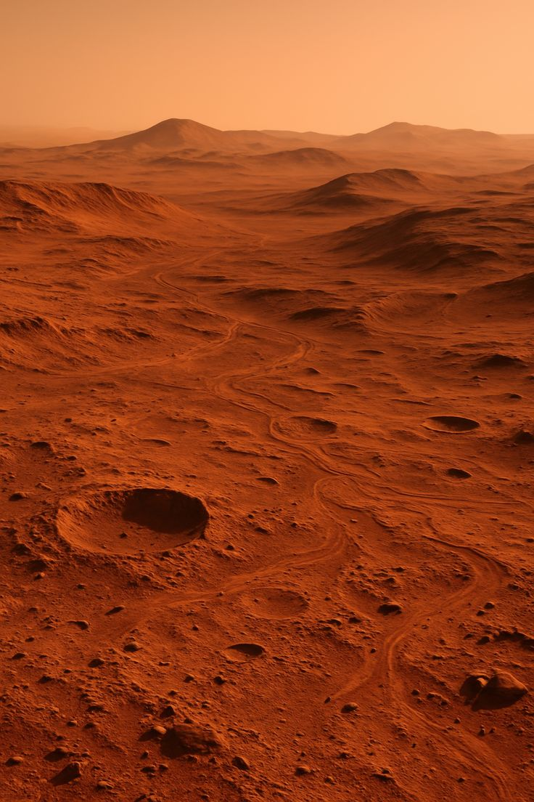
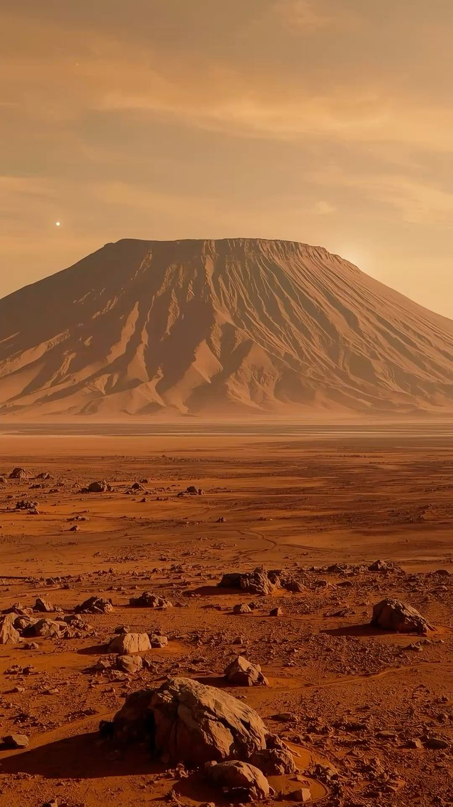
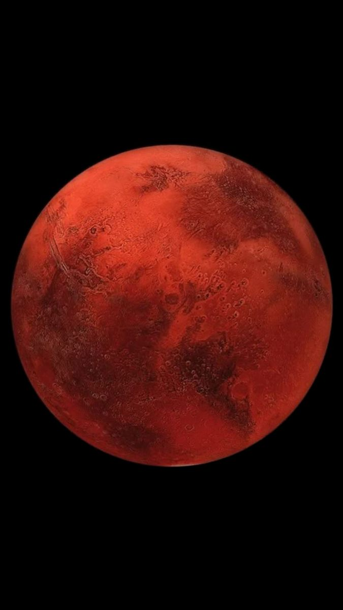
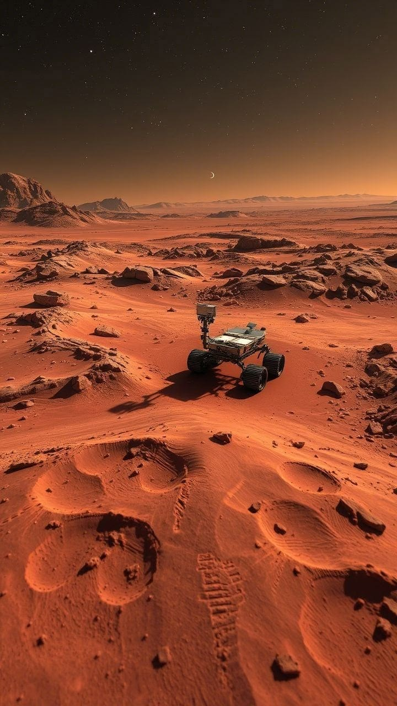
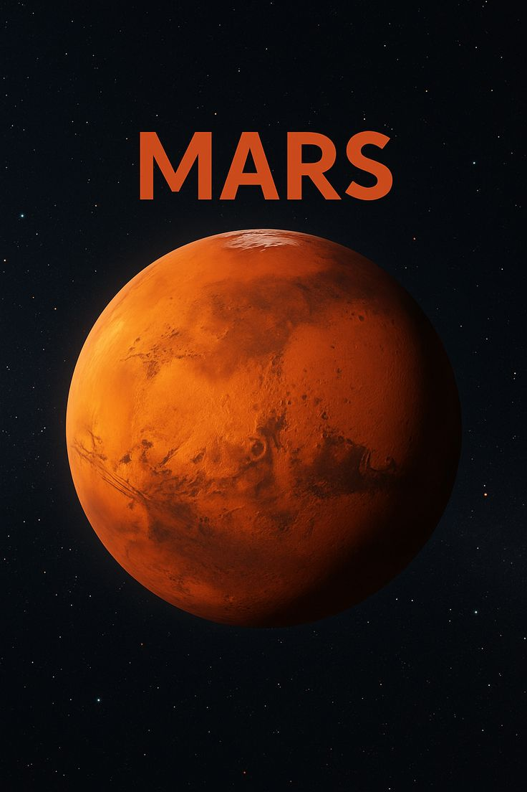
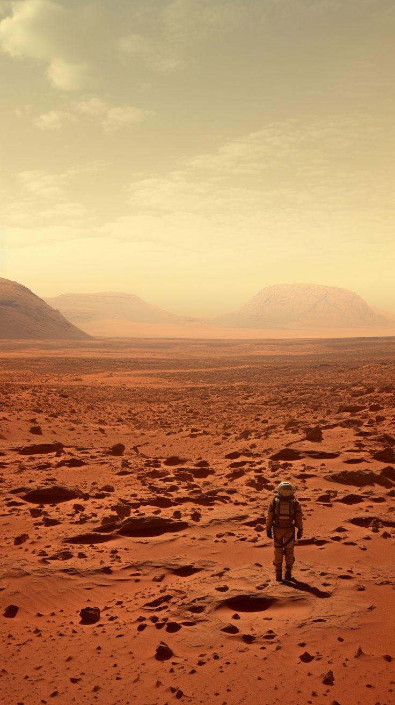

Descubra Marte de verdade | NASA Space Apps

Marte não é desenho. É um planeta de ferro, poeira, crateras, vulcões gigantes e um passado com água. Esse site usa dados reais da NASA e da ESA para te mostrar isso.

Marte é o 4º planeta do Sistema Solar. Ele é menor que a Terra, tem mais ou menos metade do tamanho, mas tem coisas muito maiores que as nossas.

A Cratera Gale tem 154 km de largura - maior que a cidade de São Paulo. Ela foi formada por um asteroide gigante há cerca de 3,5 bilhões de anos.
No centro dela tem o Monte Sharp, com 5,5 km de altura. Ele é como um livro de história: cada camada de rocha conta uma época diferente de Marte.
Por que a NASA escolheu a Gale? Porque lá tem provas de que já teve um lago gigante de água líquida. Onde tem água, pode ter tido vida.


Ainda não achamos vida, mas achamos tudo que a vida precisa:
Se um dia teve vida em Marte, provavelmente era micróbio, bem pequenininho, escondido embaixo da terra.
Por que Marte é marrom avermelhado? Por causa do óxido de ferro, é literalmente ferrugem!
Marte nasce, quente, com vulcões e talvez oceanos.
Marte perde o campo magnético, fica frio e seco.
Cratera Gale se forma. Com lagos, rios e clima mais quente.
Curiosity pousa na Gale e confirma que lá já teve água e condições que podiam sustentar vida.
Perseverance pousa e o helicóptero Ingenuity voa pela primeira vez em outro planeta.
NASA planeja trazer as amostras de Marte para a Terra e, no futuro, mandar humanos.

• O pôr do sol em Marte é AZUL, não laranja!
- Marte já teve um oceano no hemisfério norte.
- Se você pesar 50 kg na Terra, em Marte vai pesar só 19 kg.
- A maior montanha do Sistema Solar está em Marte.
Para quem quer se aprofundar um pouco mais em como sobreviver em Marte, a gente criou um mapa de exploração.
Nele você consegue visualizar a região do Monte Sharp, marcar pontos de interesse e montar uma rota, pensando em onde seria melhor colocar uma base, estudar o terreno e planejar uma missão.
É uma ferramenta educativa de planejamento, com relevo simulado e indicadores aproximados.
Exploração de uma área de formações rochosas na Cratera Gale, estudada pelo rover Curiosity.
Como usar: Selecione um ponto A, B ou C, clique no mapa para analisar outras posições e conecte os pontos para visualizar o percurso estimado.
As cores representam faixas de altitude simuladas. As curvas de nível são ilustrativas e não correspondem a um modelo digital de elevação oficial.